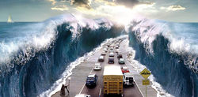

De: La Frikipedia, la enciclopedia extremadamente seria.
De: La Frikipedia, la enciclopedia extremadamente seria. De: La Frikipedia, la enciclopedia extremadamente seria.
| De la serie Países del planeta tierra: | |||||
| מדינת ישראל Medinat Yisra’el دولة إسرائيل Dawlat ’Isrā'īl IsraHell | |||||
|---|---|---|---|---|---|
| |||||
| Lema: "Yo te lo vendo por la mitad..." | |||||
| Himno: Hava Nagila
| |||||
| 
| |||||
| Capital | Jerusalén | ||||
| Mayor ciudad | Nazareth | ||||
| Lenguas oficiales | Jewish, Ingré | ||||
| Gobierno | Dictadura Sionista | ||||
| Nanananananana líder... | Rey David | ||||
| Área | La que le robaron a Palestina | ||||
| Población | Judíos, árabes, chinos y vendedores de tila... | ||||
| Moneda | Shekel | ||||
| Zona horaria | X(Y/Z) | ||||
| Dominio Internet | .jew | ||||
| Código telefónico | 00jehová
| ||||
| No les gusta el SKA, eso es algo nacional... Tampoco les gusta el cine de Mel Gibson, claro que, eso ya es algo internacional... | |||||
Israel es algo que empezó siendo una fantasía sacada de un libro para niños, conocido como La Biblia, en donde a unos chavales se les decía que se les entregaría La Tierra Prometida y que acabó con un picnic en la Tierra que continua aun hoy en día. Tiene una extensión muy grande y unos cuantos habitantes (solo unos pocos millones). Tiene muchos nombres de cariño, como Judíolandia, USA en Medio Oriente o muy cariñosamente La Tierra Prometida.
Israel tuvo dos poblamientos, el primero por los hombres de barro creados por Prometeo pero estos al ser muy mafiosos y cabrones provocaron la ira del dios Buda que al notar que ni siquiera aceptaban sus clases de Yoga terminó barriéndolos con una inundación que terminó liquidando a los seres de barro salvó uno que se salvo, se llamaba Noé y su descendencia fue tan vasta como diferente. Salieron de una Pokebola los Cadforitas (ancestros de los Filisteos y fenicios), los medianitas, los idumeos, los sirios y finalmente los semitas. Este último pueblo tenía a un patriarca llamado Abraham que tuvo doce hijos cuyos nombres serían los de las doce tribus de la confederación hebreos. Obviamente como eran hermanos se odiaban entre sí por lo que su debilidad mental fue aprovechada por los egipcios a los que les importó poco y nada que el visir anterior haya sido un jefe tribal hebreo.
Luego de varios siglos de esclavitud, hambre y todas esas cosas feas, sale la imagen de un líder bolchevique panhebraica llamado Moshé que luego de unas pestes, más una amenaza de insurrección logra la liberación total pero al no tener GPS no lograron encontrar un lugar propicio para colonizar. Se oyen rumores de que hay una tierra fértil por el territorio de los filisteos y Edomitas.
Finalmente luego de medio siglo de vagar por la región del Sinaí llegan a La tierra prometida' pero Moshé no pudo ver esa proeza, ya que murió de una insuficiencia cardíaca a la joven edad de 107 años pero las tribus quedarían bajo las manos del caudillo pro sionista Josué que decía: Muchachada mañana tomaremos vino en copas de los Idumeos. Tal declaración fue la razón por la cual los Idumeos quedaron desplazados hacia una zona inhóspita, condenados a chupar piedras de tal forma que la ciudad de Petra es una demostración de tal hecho.
Después de mucho tiempo empezaron a matarse entre sí dejando sin mujeres a la tribu de Benjamín, nadie se calentó por ese problema poblacional salvó la tibu de Juda que les dio mujeres y Benjamín quedó como una tribu satélite de los de Juda que ya se habían ocupado de manipular a los sacerdotes de Leví que eran los descendientes de Áaron, hermano de Moshé que a pesar de adorar dioses paganos terminó siendo designado Cohen o Sacerdote Supremo de las tribus.
Los filisteos se aprovecharon de la debilidad de los hebreos, sometiéndolos a una república laica burguesa basada en la producción de materias primas para venderlas al exterior o a una factoría fenicia en el sur de África.
Los hebreos necesitaban una unión nacional bajo un gobernante fuerte y con mayor poder al de los Jueces del período anterior que eran electivos. El profeta Elías encuentra al joven Saúl al cual lo nombra rey de las tribus. Saúl termina siendo un monarca a menos pero es asesinado por los filisteos en una batalla y su cabeza colgo de las murallas de Sidón hasta que unos patriotas la recuperaron. Se buscó a otro rey el cual fuera mejor que el anterior por lo que se escogió a David que era descendiente de la oligarquía de la cebada de Juda además de ser descendiente del terrateniente Booz cuyo prestigio valía entre la clase privilegiada de Judea y tenía una riqueza de mil camellos que sumado a su cantidad de tierras que era mayor a la región de Galilea , por lo tanto su historia era más que perfecto.
David como rey tenía un objetivo claro: Sacar a los Filisteos a mansalva y los hizo en un pispaz, ya que la ferocidad de un fanático bolchevique hambriento con consuelo de un ente superior comparable a la hordas mongoles que azotaron Europa. Israel ocupa un territorio mayor al que tenía y mantiene a raja a sus hermanitos menores edomitas y moabitas por más de un siglo.
A la muerte del sabio Salomón el Reino se divide en dos: Juda al sur con capital en Jerusalem e Israel con capital en Samaria. El segundo sobreviviría más que el posterior por el sacrificio desesperado de Ezequiel ante la invasión Asiria. Caería finalmente ante los babilonios de Nabuconodosor empezando la detestable diáspora hacia naciones árabes hermanas, ya que lo quieran o no los judíos o gente sobreviviente de Juda por motivos históricos son hermanastros, ya que Abraham tuvo un hijo con su esclava llamado Ismael que sería el hermano mayor de Isaac. Este hombre termino siendo padre de las tribus árabes de las cuales nacería Mahoma, máximo profeta del Islam pero como siempre los hermanos se odian para joder.
Pasando por los macedonios, Roma y un montón de gente rara el martirio de los judíos nunca termina.
Este primer Aliñó se produjo como consecuencia de las envidias persecuciones que los europeos israelíes provocaban a los israelíes europeos. En ese primer aliñó comenzaron los verdaderos odios contra Palestina, ya que un tal Moisés Hess comenzó a decir una serie de sandeces, como que la tierra palestina era judía y que la Luna giraba alrededor de la Tierra, un claro ejemplo de fanático de la Wikipedia. Este movimiento fue llamado sionista, fundado en secreto por Teodor Herlz, un periodista deportivo austrohúngaro que iba diciendo gatunadas por la calle mientras hablaba solo, al que muchas personas le hicieron caso, ya que de aquella no había nada mejor que hacer. Las siguientes Aliñós fueron en gran parte culpa de este último, que le sugería a sus fieles que emigrasen hacia la tierra prometida, donde el chocolate (y no el de comer) llovería del cielo. La tercera y la cuarta se produjeron tras la Primera Guerra Mundial, ya que los judíos, como grandes pillos, sustrajeron los excedentes de armas para formar su propio ejército, dado que no quedaba más dinero tras gastarlo en las tierras.
Ben Gurión y miembros fuertes del judaísmo se reúnen con mandatarios británicos presionando por un nuevo Estado propio. Se logra con alta efectividad pero los árabes no querían quedarse atrás por lo que los dos se ponían a negociar como iban a ser los límites de los dos estados pero mientras eso sucedía surge un conflicto con los jeques de Transjordania que comenzó cuando deijeron: Están mejor bajo nuestra bara. La guerra de los seis días comenzó y los patriotas hebreos empezaron a contraatacar desplazando a la alianza árabe que pidió la tregua y el cese al fuego absoluto. El nuevo estado de Israel consolidó su estatus desplazando a los árabes que contraatacarían con una maniobra sucia, ya que Yom kipur es una festividad pacifica donde la gente se arrepiente de sus pecados y las fuerzas se encontraban en reposo por lo que se aprovechó esa ventaja y empezó otra guerra pero los fanáticos religiosos con apoyo de los marcianos no pudieron contra la avanzada tropa hebrea armada y entrenada por altos mandos estadounidenses. En esa guerra murieron medio millón de árabes, tres judíos y un alto mando estadounidense baleado por sus propias tropas en un altercado en un bar de Hebrón.
Los hebreos terminaron quedándose con tierra santa algo que los cristianos no pudieron lograr con las cruzadas hace 9 siglos mientras Egipto frente a la aniquilación de su ejército recurre a gobiernos militares pro nacional socialistas con apoyo de la URSS para no convertirse en un estado vasallo de Israel como el Líbano que fue bombardeado hasta la raja.
Israel cede regiones autónomas pero no soberanas a los árabes para que la ONU no moleste pero los insurgentes son fieles a sus ideales por lo que los hebreos atacan a los árabes como medida disuasoria mediante la operación hierro fundida. El éxito fue aplastante por lo que los palestinos pidieron cese al fuego momentáneo para discusiones sobre el futuro de la región. No paso nada.
La voluntad del pueblo judío es prodigiosa. Un dicho hebreo decía: Pudimos contra Antíoco, pudimos contra Tito, pudimos contra Hitler, pudimos contra 10 naciones árabes por lo tanto, resistir es vencer o eso decía el comandante supremo del ejército judío Moshé Dayan. Por lo tanto les viene una mierda.
El yacimiento más antiguo encontrado sobre Israel se encuentra bajo una piedra en un museo de Londres, cómo no. En 1980, un arqueólogo Británico llamado Sir Lord Lady Pepinou robó la piedra del secreto de la masa de Telepizza junto con la del secreto de Israel, aunque luego la perdió, como buen inglés. Desde principios del siglo XII, existen muestras de población de origen pastafari, que llegaron desde Gondwana como emigrantes, para formar los reinos de Israel y Sudán (este último llamado así porque no veas qué calor, ya te digo, y tal y cual Pascual).
Balagan es una expresión que podría usarse sin preocupaciones en la frase Joder! que desorden que podía explicar los comienzos creativos y estructurales del estado de Israel como estado, nación y fuente de creación artística y comercial.
Un hecho factual antes de la declaración de independencia fue la creación de EL-AL que empieza a funcionar un día antes de que Israel fuera un estado porque los muchachos ya sabían desde hace mucho que la independencia iba venir si o si por lo que los hebreos ya tenían una aerolínea estatal que dos años más tarde tenía como destino París y Roma (No era porque a los magnates hebreos les gustaba viajar ahí todo el timpo sino que era una cuestión de amistad comercial). Un día después de la independencia el nuevo estado formula un sistema educativo que contaría con 100000 de una población creciente de 650000. En ese sistema se idearían talleres de teatro con base de autores británicos como Shakespeare mientras los burócratas tratan de explicar la sociología racional reaccionaría de la población ante tales obras, el resultado es un grupo de gente empezando a hablar raro como si un poblador tratara a un cobrador como si fuera Julieta, muchos lo intentaron y salieron exitosos:
«Oh! mi amado cobrador porque usted opaca mi corazón con tal horrendo y sacrílego papel llamado declaración de impuestos no ve que mi alma ya esta herida»
~ Hebreo demostrando como evadir impuestos gracias a un taller de tres semanas
Llegan terroristas del color y abstracción a Tel-Aviv como Joseph Zaritsky, Avigdor Stematsky, Yehezquel Streichman, Aharon Kahana, o el judío islamofóbico que hizo la película de Mahoma, entre otros que se proponen dejar Israel en un estado de inflamación bajo una nube de color, rayas, puntitos y cosas impredecibles que un niño de 7 años usa para limpiarse luego de ir al baño después de comer mucho pan sin levadura. Surge el primer congreso Macabi o sionista para dar por concluida la formación del Seleccionado de Fútbol de Israel que pierde su primer partido contra USA.
En 1949 se instaura la ley de educación obligatoria por lo tanto todos los vagos analfabetas tendrían que ir a la escuela por medio voluntario o bajo el rifle de un soldado de la IDF. Ese mismo año nace Eilat, un aerolínea amenas creado por los soldados sobrevivientes de la exitosa operación Uvda mientras se iza un trapo dibujado representando la bandera de Israel, la aerolínea pasaría a manos de obreros sindicalistas con ideales de izquierda como todo sindicato, se le cambiaría el nombre luego por Arkia Israel Airlines. Llega huyendo de los Soviet Efraim Kishón, escritor y demente literario famoso por ser nominado al Oscar y escribir libros sobre cosas que un niño de 7 años con ganas de ir al baño no entendería pese a eso decidió irse a vivir a Suiza por la discriminación sufrida por sus pares por ser de ascendencia húngara y por haber conseguido mayor reconocimiento que los escritores judíos de los círculos literarios. Ante todo siguió siendo un sionista ejemplar. Para finalizar este año Israel entra en la UNESCO.
En 1953 se funda la RAE hebrea o sea la Academia de la Lengua hebrea cuyas decisiones sobre el destino de la lengua son inalienables y un año posterior Shaul Chernijovsky traduce los clásicos de la antigüedad como La Odísea, La Ilíada entre otros y explíca que Israel era como una Troya destruída y sus habitantes eran un Eneas prófugo de las injusticias de dioses paganos pero que algún día los descendientes retornaría a Troya reconstruyéndola desde sus cenizas para luego borrar de la faz de la tierra a los Aqueos árabes.
En 1985 llega a Japón Jaim Saban, quien adquiere los derechos del programa “Zyu Rangers” (Power Rangers) a un precio bajísimo, transformándose en el dueño de su comercialización. Se lo considera uno de los hombres más ricos del espectáculo. Su hermano, Arieh, es el propietario de los derechos en Israel. Así se da un ejemplo claro de como se lucra mediante aprovechamiento poco ortodoxos y negocios con chinos.
En 1998 nace el Simposio escultórico en el puerto de Ashdod. 15 escultores, 9 israelíes y 6 extranjeros, enfrentan 450 toneladas de bloques de piedras que deberán ser devoradas durante 25 días. La piedra, cortada en la cantera, transmite un mensaje de eternidad y su entera consumación significa lo bien que saben las piedras hebreas.
Así termina el ciclo frikipedista israelí de Balagan. Ojalá que no les haya gustado seres hipócritas que confabulan con los sunnitas para aniquilarnos. MWAHAHAHAHAHAHA!
El hebreo cotidiano es un ser humano como cualquier otro, compra CD de Justin Bieber, escucha el Gagnam Style, va a rezar a la sinagoga, pide perdón frente a lo queda de las paredes del sagrado templo. No discrimina sino que trata de alquilarle al discriminado buscando un beneficio de simbiosis entre ambos. Se podría decir que el judío no excluye sino incluye en sus negocios eso sí sino te gustan o no te conviene eso ya es un motivo egoísta que hace llorar a Buda.
El judío normal es indiferente en todo. Puede estar rezando en un templo shinto o en una iglesia mormona porque para los hebreos y pueblos semitas como los griegos somos todos hermanos por lo tanto la bebida se convida en un casamiento aunque ni siquiera sepa quién se casa. Se podría que reboza de alegría en todos sus aspectos y la veneración al ocio es primordial los sábados para reflexionar sobre el buen negocio. La usura maléfica es un invento del noble explotador europeo que al no poder pagar sus préstamos a acreedores hebreos recurrían al papa que también tenía sus deudas y para no pagarlas se inventaban que era un pecado y todo eso mientras que explotar a la gente haciéndola plantar frijoles era algo de todo los días. Todos los judíos se ayudan entre sí, sean chinos, etíopes, bolivianos o bastardos sin alma como pago hacia el Gran Buda que se sacrificó por ellos entregándose a las autoridades romanas para luego ser crucificado acusado por dar un grito de libertad a los bolches oprimidos bajo las manos del régimen fascista de Roma.
En conclusión digan lo que digan, es tipo que habla un idioma parecido a escupir arcilla está para usted con buenas intenciones por lo que le conviene casarse con la hija de algún adinerado descendiente de Isaac para tener muchos profits una buena vida de ocio en el negocio del comercio.
Israel esta habitada por personas que vagaban por todo el mundo con el parasol a cuestas (en ningún lado los querían, ni en Egipto, ni en Alemania...) y decidieron instalarse en el protectorado británico de Palestina. La idea inicial era formar la colonia en la Patagonia Argentina, pero como en ese lugar hace tanto frío que se te congelan los mocos, decidieron irse a Oriente Medio ya que es más cálido.
El 80% son judíos, el 23% palestinos y el otro 12,5% chinos (es que son muchos, hay que repartirlos por el mundo). La mitad de los judíos israelíes son ateos que tienen poco de judíos judíos seculares (hiloni). El 8% de los judíos israelíes son ultraortodoxos. Los ultraortodoxos son los putos amos y la parten que pim que pam por tó Israel, pues lo único que hacen es rascarse los huevos a dos manos y follar a destajo estudiar la religión judía, no trabajan, viven de subvenciones del Estado, no pagan impuestos, no hacen el servicio militar y no gastan ni en ropa ni gel de ducha, y eso por no hablar de cualquier cosa relacionada con el afeitado. Actualmente esas cifras están del revés y las autoriades para que el país no se quede sin judíos practica el nazismo: coge a los "inmigrantes" (sobre todo negros) y se los lleva a un "Campo de internamiento" (¿les suena?) y luego los "expulsa" del país.
Los israelitas suelen tener predilección por el fútbol con cabeza de ajo con equipos de gran tradición como el Maccabi de Enterar y el prestigioso Hapoel y Garfunkel. Otro deporte recurrente es el baloncesto (ese deporte que consiste en cometer dos ensayos antes del pitido del 5 cuarto después de marcar seis goles en propia meta haciendo dos puntos de set y partido) favorito del planeta y obligatorio en todas las escuelas (como ya sabrán siguen el sistema soviético-comunista según nuestro mentor Francisco Franco) consiguiendo así que la esperanza de vida no supere los paupérrimos 239 años.
Pero ello no logra eclipsar el que siempre ha sido el deporte rey del pueblo de Israel, el sacar dinero de hasta debajo de las piedras, ya sea desarrollando tanto el PenDrive como el ICQ o vendiendo Trolex al doble de su precio. Pero su mayor afición es jugar a hundir la flota con Turquía (otro de los andurriales que todos nombran pero nadie sabe onde coño está). Lo malo del juego es que si Israel hunde demasiados turcos ya dicen que han hecho trampa y lloran a papa Obambi.
| Personaje | Descripción |
|---|---|
Hugo Pratt |
Ente ehebreo que se dedico al arte de la historieta representando generalmente seres trastornados por la guerra o por síntomas relacionados con la alta consumación de prostitutas y estupefacientes ilegales. Su abuelo era fascista y su familia era de ascendencia sefardí o sea de los moros judíos masacrados durante La reconquista Española. Su estabilidad mental reboza de plenitud por lo que no se le puede decir además a varoios de los frikis que escriben esto les gusto su cómic llamado el Corto Maltés. Sin lugar a dudas es judío |
Héctor Oésterheld |
Historietista que colaboro en las maquinaciones perversas del anterior. Militante de una falange de izquierda llamada Montoneros lo llevó a ser perseguido por el Gobierno Militar Argentino. En sus desagravios mentales escribió El Eternauta que narra la vida de un sujeto que no pudo lucrar en el negociado de una guerra nuclear que tira nieve radioactiva matando a mucha gente. El Protagonista se propone todoi para llegar a la cancha del club de sus amores: River Plate para luego entablar una guerragaláctica contra seres inexplicables que reformulan pasajes de la biblia y canciones de Xuxa para eliminar a la raza humana. Oésterheld sería secuestrado y asesinado por entes militares junto a sus hijas. Nunca se encontaron sus restos. |
Allan Stewart Königsberg (Woody Allen) |
Director iluminado cuya esposa lo dejo por otra mujer. Se dice que tiene un extremismo notorio hacia lo bizarro como viajes en el tiempo, bustos femeninos de tamaño desproporcionados, sujetos que trabajan como profesores de tenis que conoce a un adinerado señor e idea un plan meticuloso y asesinar a su amante para no arruinar su vida placentera (se caso con la hermana del señor adinerado y se tiró a la exnovia del mecionado anteriormente). Todas sus oras rebozan de una filosofía erótica que nos transporta a un mundo paralelo como Saber y Ganar de la TVE. Su estabilidad mental no aparece representado en ningún gráfico por lo que si lo invitan a tmar el té con él no rechace la oferta o se arrepentirá. |
Richard Tiffany Gere |
Hombre respetado entre los frikis, su naturaleza budista es un truco hebreo tradicional para lucrar como un infiltrado aprovechandose de culturas oprimidas para favoirecerse medianrte fundaciones caritativas además de que es un Gigoló americano y un chulo como se podrá denotar en la película Pretty Woman. Se cree que está volando por el cosmos buyscando al dios que iluminó a Abraham pero lo llama en estos casos para no joder al Dalai Lama. |
Albert Einstein |
Refugiado de los Nazis y inmigrante influenciado por el sueño americano famoso por descubrir que el universo es un ser extenso que trata desde tiempos inmemoriables copularse a nuestras mujeres pero este descubrió la frase mágica para evitar tal monstruosidad: E=MC2 o sino directamente se destruye mediante el uso de bombas nucleares, plan que fue dejado estar para futuros própositos. |
| |
|---|
| Arabia Saudita • Azerbaiyán • Bahrein • Bangladesh • Bután • Birmania • Brunéi • Camboya • Emiratos Árabes • Indonesia • Jordania • Kuwait • Kirguistán • Maldivas • Nepal • Omán • Qatar • Singapur • Sri Lanka • Tayikistán • Timor Oriental • Yemen |
Autor(es):